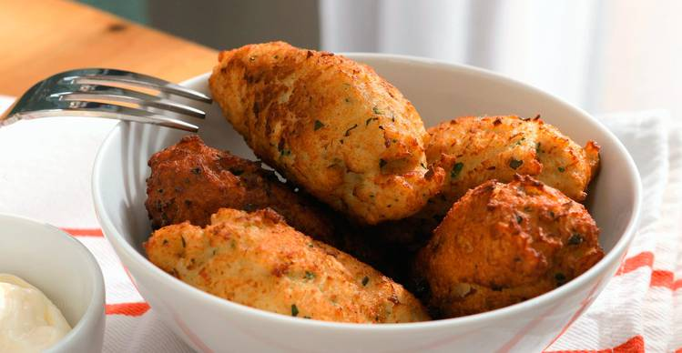

Silly eggs

In spanish is huevos tontos, but in english i prefer to say Dumbass eggs
Silly eggs recipe is Foolproof, so if you have two neurons or less. This recipe it's for sure your best
Ingredients
- Bread
- 2 eggs
- Milk
- Oil tuna
- Garlic
- salt
- Pepper
- Parsley
Steps
- Slice the bread in little squares and put it in a bowl
- Pour some milk until the liquid is dry
- Zest an chopp the Garlic, Pour some tuna and then put it into the bowl
- Beat yout mea... Sorry, beat the eggs and then add it to the mixed in the bowl
- Whith a spoon make some kind of balls whith the Ingredients
- Fry your balls, until they get golden and crunchy
- Dry the excess oil with paper, and then ENJOY!